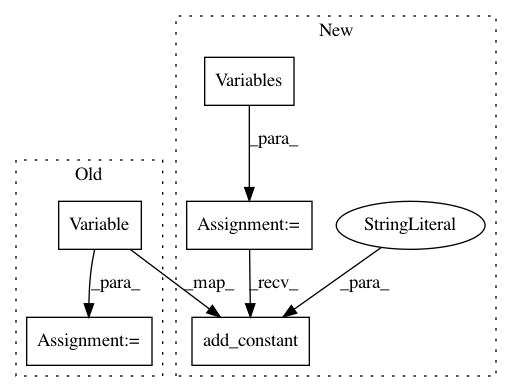

3245eece6e5951f3216d030f7fe3200c4caf3a6f,brian2/monitors/spikemonitor.py,SpikeMonitor,__init__,#SpikeMonitor#Any#Any#Any#Any#Any#,37
Before Change
stop = getattr(source, "stop", len(source))
device = get_device()
self.variables = {"t": AttributeVariable(second, scheduler.clock, "t_"),
"_spikespace": source.variables["_spikespace"],
"_i": device.dynamic_array_1d(self, 0, Unit(1),
dtype=np.int32,
constant_size=False),
"_t": device.dynamic_array_1d(self, 0,
Unit(1),
constant_size=False),
"_count": device.array(self,
len(source),
Unit(1),
dtype=np.int32),
"_source_start": Variable(unit=Unit(1), owner=self,
value=start,
constant=True),
"_source_stop": Variable(unit=Unit(1), owner=self,
value=stop,
constant=True)}
GroupCodeRunner.__init__(self, source, "spikemonitor",
name=name, when=scheduler)
After Change
start = getattr(source, "start", 0)
stop = getattr(source, "stop", len(source))
self.variables = Variables(self)
self.variables.add_attribute_variable("t", second, scheduler.clock, "t_")
self.variables.add_reference("_spikespace", source.variables["_spikespace"])
self.variables.add_dynamic_array("_i", size=0, unit=Unit(1),
dtype=np.int32, constant_size=False)
self.variables.add_dynamic_array("_t", size=0, unit=Unit(1),
constant_size=False)
self.variables.add_array("_count", size=len(source), unit=Unit(1),
dtype=np.int32)
self.variables.add_constant("_source_start", Unit(1), start)
self.variables.add_constant("_source_stop", Unit(1), stop)
def reinit(self):
In pattern: SUPERPATTERN
Frequency: 3
Non-data size: 5
Instances
Project Name: brian-team/brian2
Commit Name: 3245eece6e5951f3216d030f7fe3200c4caf3a6f
Time: 2014-01-15
Author: marcel.stimberg@ens.fr
File Name: brian2/monitors/spikemonitor.py
Class Name: SpikeMonitor
Method Name: __init__
Project Name: brian-team/brian2
Commit Name: 3245eece6e5951f3216d030f7fe3200c4caf3a6f
Time: 2014-01-15
Author: marcel.stimberg@ens.fr
File Name: brian2/groups/subgroup.py
Class Name: Subgroup
Method Name: __init__
Project Name: brian-team/brian2
Commit Name: 3245eece6e5951f3216d030f7fe3200c4caf3a6f
Time: 2014-01-15
Author: marcel.stimberg@ens.fr
File Name: brian2/monitors/ratemonitor.py
Class Name: PopulationRateMonitor
Method Name: __init__